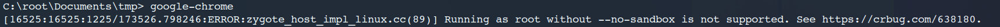

How to Install and Enable Google Chrome in Kali Linux
Actually, Chromium Web Browser is attached with Kali Linux image. However, if you still prefer to use Chrome, then you can install the Chrome with the following steps:
First, download google-chrome-stable from the web:
https://dl.google.com/linux/direct/google-chrome-stable_current_amd64.deb
Then, install it with command:
1 | sudo apt install ./google-chrome-stable_current_amd64.deb |
Okay, now we have Chrome installed in our Kali system.
However, in Kali, you’re not able to run Chrome or Chromium as root. When you click on Chrome icon in GUI, Chrome will not response and open a new window. So let’s try to launch Chrome in the terminal to see what’s happening there.

Okay, now we know the reason why we cannot launch Chrome with root privilege.
I would recommend to create another user when browsing the internet. As not allowing using Chrome as root is actually a control for security reasons.
However, if you still want to run Chrome as root. Let’s try to find out how to bypass the limitation.
Edit /usr/bin/google-chrome:
Add –no-sandbox parameter to the exec line. That’s it!